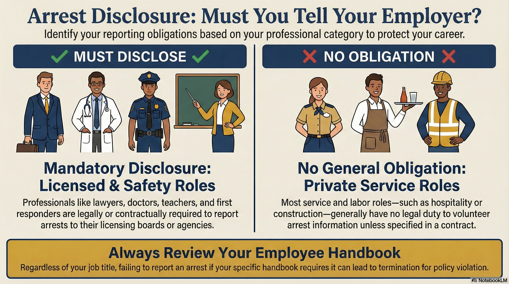
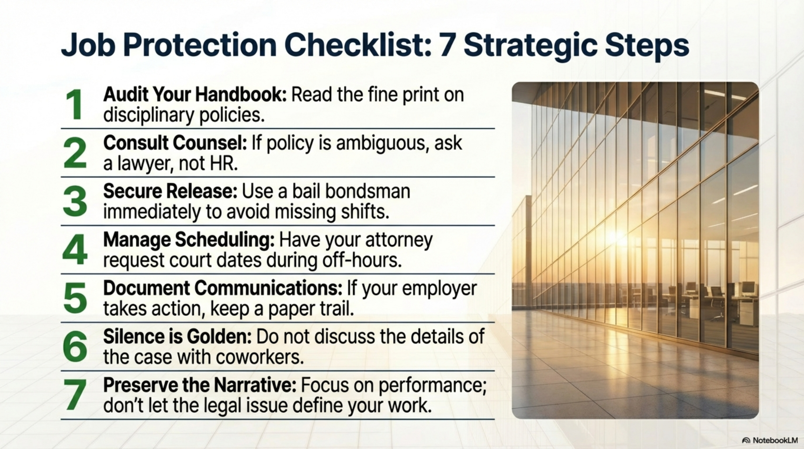
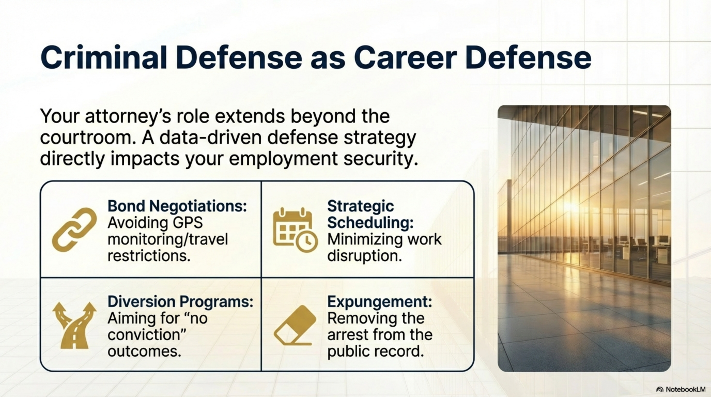
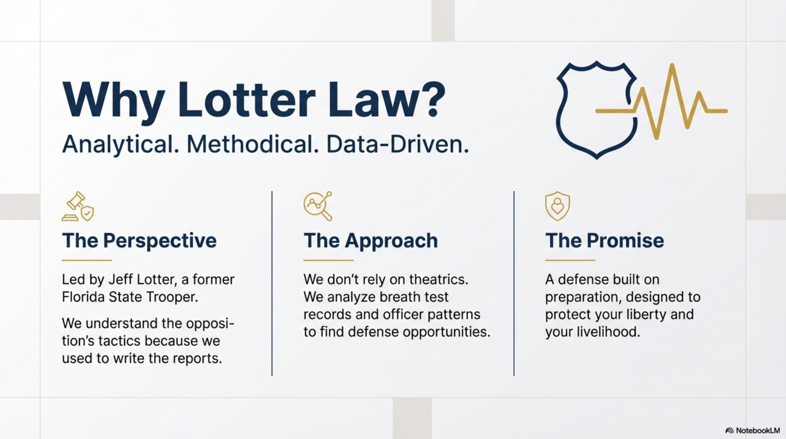
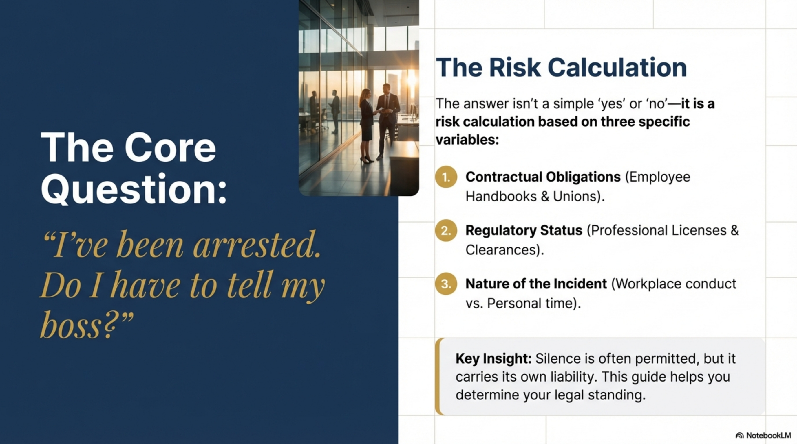

Do I Have to Tell My Employer I Was Arrested?

You've been arrested. Your first thought after leaving jail isn't just about your criminal case—it's about your job. Do you have to tell your employer? Will they find out? Can they fire you?
The answer depends on your employment contract, your industry, and the nature of the charges. Here's what you need to know to protect both your case and your livelihood.
The Short Answer: It Depends on Your Contract
Florida is an "at-will" employment state, meaning employers can terminate employees for almost any reason (with some exceptions like discrimination). However, whether you must disclose an arrest depends on:
- Your employment contract or employee handbook
- Whether you work in a regulated industry (healthcare, finance, education, etc.)
- Whether your arrest involves conduct at work or using company property
- Whether you're subject to professional licensing requirements
When You MUST Disclose an Arrest
Mandatory Disclosure Situations
You are legally or contractually required to report an arrest if:
- Your employee handbook or contract explicitly requires reporting arrests or charges
- You hold a professional license (lawyers, doctors, nurses, teachers, financial advisors) with reporting requirements
- You work in a security-sensitive role (law enforcement, corrections, security clearance jobs)
- The arrest involves conduct at work (assault of coworker, theft from employer, DUI in company vehicle)
- You're required to maintain a valid driver's license for your job and you're charged with DUI or suspended
- You're unable to report to work due to jail or bond conditions

Failing to report when required can result in termination for policy violation—separate from the underlying arrest.
When You DON'T Have to Disclose (But Should Consider It)
If your employer has no policy requiring disclosure, you generally are not legally obligated to volunteer information about an arrest. However, silence carries risks:
Risks of Not Disclosing
- They may find out anyway: Mugshot websites, background checks, local news coverage, or coworkers who saw your arrest
- Court appearances: Missing work for hearings raises questions; lying about the reason can backfire
- Jail time: If convicted and sentenced, unexplained absences will be discovered
- License suspensions: DUI arrests can suspend your license; if you drive for work, this becomes obvious
- Trust erosion: Employers who learn about arrests from external sources may feel deceived
Professional Licensing: Special Rules
If you hold a professional license in Florida, your licensing board likely has its own reporting requirements that are separate from your employer's policies.
Common Licensing Boards with Arrest Reporting
- Florida Bar (Lawyers): Must report arrests within 15 days
- Board of Nursing: Must report criminal charges within 30 days
- Board of Medicine: Must report felony arrests
- Department of Education (Teachers): Must report arrests involving moral turpitude
- Financial services licenses: FINRA requires reporting of criminal charges
Failure to report to your licensing board can result in separate discipline, including suspension or revocation of your license—even if your criminal case is dismissed.

Can My Employer Fire Me for Being Arrested?
In Florida, yes—with important exceptions.
Because Florida is an at-will employment state, employers can terminate employees for almost any reason, including an arrest. However, they cannot fire you for illegal reasons, such as:
- Discrimination: Firing based on race, gender, religion, etc., even if arrest is the stated reason
- Retaliation: Firing you for reporting workplace violations (whistleblower protection)
- Contractual protections: If your contract or union agreement requires "cause" for termination
Arrest vs. Conviction: Important Distinction
Some employers have policies that distinguish between arrests and convictions:
- Arrest: May trigger suspension or investigation, but not automatic termination
- Conviction: May result in termination, especially for felonies or crimes of dishonesty
Review your employee handbook to understand your employer's specific policy.
What About Background Checks?
If your employer runs a background check while you're employed (not just at hiring), they may discover your arrest. Here's what the law requires:
Fair Credit Reporting Act (FCRA) Protections
- Employers must notify you before running a background check
- If they take adverse action based on the report, they must provide a pre-adverse action notice
- You have a right to dispute inaccurate information on background reports
- Arrests without convictions older than 7 years generally should not appear on consumer reports (but this is often violated)
Practical Strategies to Protect Your Job

While navigating both a criminal case and employment concerns, consider these practical steps:
Job Protection Checklist
- Review your employee handbook and contract: Look for arrest reporting requirements and disciplinary policies
- Consult with HR or legal counsel: If your handbook is unclear, ask before assuming you don't need to report
- Get released from jail quickly: Use a bail bondsman to avoid missing shifts
- Request flexible court dates: Ask your attorney to schedule hearings during off-hours when possible
- Document everything: If your employer takes action, keep records of communications
- Fight for case dismissal: A dismissed case limits the long-term employment impact
- Consider pretrial diversion: Successful completion can lead to dismissal, protecting your record
How Your Attorney Can Help

A criminal defense attorney doesn't just represent you in court—they can help protect your employment by:
- Negotiating bond conditions: Avoiding restrictions that prevent you from working (e.g., GPS monitoring that interferes with job sites)
- Scheduling hearings strategically: Requesting dates that minimize work disruption
- Fighting for dismissals or diversions: Outcomes that allow you to truthfully report "no conviction"
- Pursuing expungement after resolution: Removing the arrest from your record entirely
- Advising on disclosure: Helping you understand your contractual obligations
Special Situations
DUI and Commercial Driver's License (CDL)
If you're a commercial driver, a DUI arrest is a job-threatening emergency:
- You must notify your employer within 30 days of a DUI arrest (federal law)
- Your CDL is automatically suspended for one year for a first DUI
- Failure to notify can result in federal penalties and permanent CDL disqualification
Security Clearances
If you hold a government security clearance:
- You must self-report arrests to your security officer immediately
- Failure to report is grounds for clearance revocation
- Even dismissed charges must be reported during clearance renewals
What If I'm Asked During a Job Interview?
This is a different question from disclosing to a current employer. Many job applications ask: "Have you ever been convicted of a crime?" or "Have you ever been arrested?"
Florida's "Ban the Box" Law (Limited)
Florida law (F.S. 112.011) prohibits public employers from asking about arrests that didn't lead to conviction. However:
- This does NOT apply to private employers
- Private employers can still ask about arrests in most cases
- Lying on an application can be grounds for termination later
If your case is still pending, consult an attorney before answering these questions. If your case was dismissed or sealed, the answer changes.
Bottom Line
Whether you must tell your employer about an arrest depends on your contract, your industry, and your professional licensing. But regardless of legal obligation, your case outcome affects your employment future.
A dismissed case or pretrial diversion gives you the best chance to protect your job and move forward. Work with a defense attorney who understands that your criminal case is also an employment case.
Arrested in Orlando? Protect Your Career
Your job may depend on how your case is resolved. A dismissal or pretrial diversion can make the difference between keeping your career and losing it. Get a free consultation to discuss your options.
Contact Lotter Law at 407-500-7000 for a free consultation.

Jeff Lotter
Criminal Defense Attorney | Former State Trooper
Jeff Lotter is an Orlando criminal defense attorney and former Florida Highway Patrol trooper. He uses his law enforcement background to build stronger defenses for clients facing criminal charges.
Related Articles
Expunged Your Record? It May Still Show Up Online
Court expungement removes your record from government files - but not from private databases.
Your Mugshot on the Internet: What You Can Do About It
How booking photos get online, your legal rights to removal, and practical steps to protect your reputation.
Florida License Suspension: Fighting HTO Administrative Review
Your options beyond the BAR office when facing license suspension after a criminal charge.
Two Red Nissans: Why Generic Property Descriptions Fail in Theft Cases
The State must prove ownership in theft cases. A recent Florida ruling shows why generic descriptions fail.